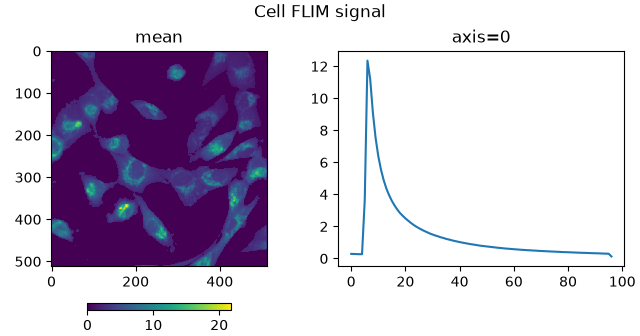
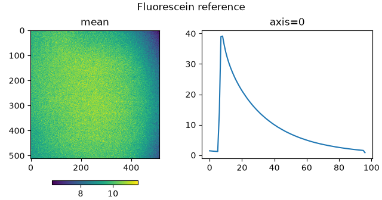
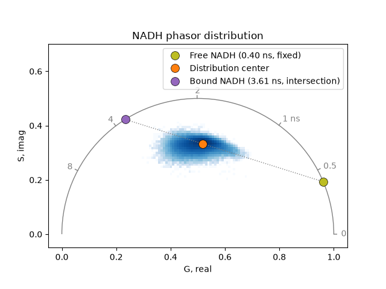
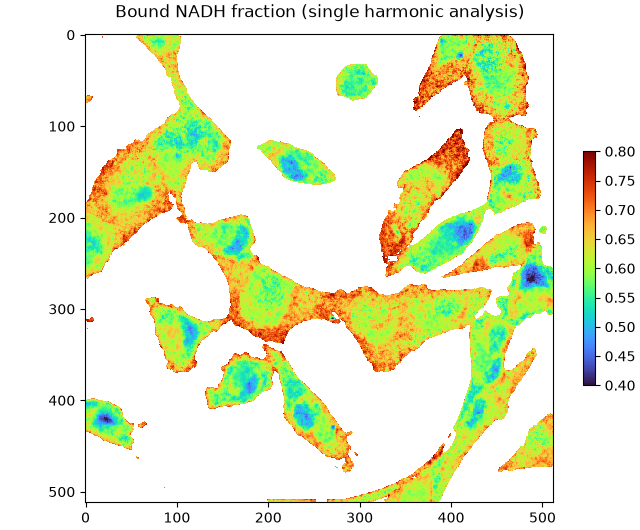
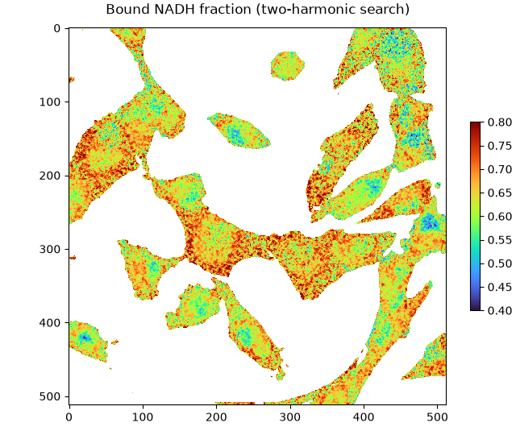
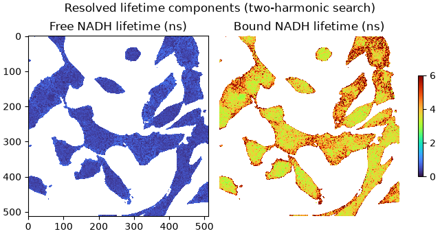

Bound NADH fraction#
Determine the bound NADH fraction using phasor component analysis.
NADH (nicotinamide adenine dinucleotide) is an endogenous fluorophore present in cells in two forms, distinguishable by fluorescence lifetime: a short-lived free form (cytoplasmic NADH, lifetime ~0.4 ns) and a long-lived enzyme-bound form whose lifetime is determined from the data.
Two approaches are demonstrated: a single-harmonic phasor component analysis using prior knowledge of the free NADH lifetime, and a two-harmonic lifetime search without much prior assumption on component lifetimes.
The data are from the companion dataset of:
Georgakoudi I, et al. Consensus guidelines for cellular label-free optical metabolic imaging: ensuring accuracy and reproducibility in metabolic profiling. J Biomed Opt, 30(Suppl 2): S23901 (2025)
Import required modules, functions, and classes:
import tifffile
from phasorpy.component import phasor_component_fraction
from phasorpy.datasets import fetch
from phasorpy.lifetime import (
phasor_calibrate,
phasor_from_lifetime,
phasor_semicircle_intersect,
phasor_to_lifetime_search,
phasor_to_normal_lifetime,
)
from phasorpy.phasor import phasor_center, phasor_from_signal
from phasorpy.plot import PhasorPlot, plot_image, plot_signal_image
Read dataset#
Read the FLIM data of human breast cancer cells and the reference of known lifetime (Fluorescein in EtOH, 3.05 ns) acquired at 80 MHz. The data are in generic TIFF format containing TCSPC histogram images (97 time bins, 512 x 512 pixels) without metadata:
Preview the TCSPC histogram images of the cell and reference:
plot_signal_image(cell_signal, axis=0, title='Cell FLIM signal')

plot_signal_image(reference_signal, axis=0, title='Fluorescein reference')

The cell signal is apparently pre-filtered to exclude background pixels and improve signal quality, while the reference signal has sufficient signal. Hence, no further thresholding or filtering is applied.
Single-harmonic phasor analysis#
Compute phasor coordinates from the TCSPC histograms along axis 0:
cell_mean, cell_real, cell_imag = phasor_from_signal(cell_signal, axis=0)
reference_mean, reference_real, reference_imag = phasor_from_signal(
reference_signal, axis=0
)
Calibrate the cell phasor coordinates using the Fluorescein reference distribution:
cell_real, cell_imag = phasor_calibrate(
cell_real,
cell_imag,
reference_mean,
reference_real,
reference_imag,
frequency=frequency,
lifetime=lifetime_reference,
)
Calculate the phasor coordinates of free NADH from its known lifetime (0.4 ns). The bound NADH phasor is determined from the center of the cell distribution: it is the second intersection of the line from the free NADH phasor through the data center with the universal semicircle. Calculate the corresponding single-exponential lifetime of bound NADH from that intersection:
lifetime_free = 0.4 # ns, free cytoplasmic NADH
free_real, free_imag = phasor_from_lifetime(frequency, lifetime_free)
_, center_real, center_imag = phasor_center(cell_mean, cell_real, cell_imag)
_, _, bound_real, bound_imag = phasor_semicircle_intersect(
free_real, free_imag, center_real, center_imag
)
lifetime_bound = phasor_to_normal_lifetime(
bound_real, bound_imag, frequency=frequency
)
Plot the phasor distribution of the cell. Pixel phasors cluster along the line connecting the free and bound NADH phasor coordinates:
phasor_plot = PhasorPlot(frequency=frequency, title='NADH phasor distribution')
phasor_plot.hist2d(cell_real, cell_imag)
phasor_plot.line([free_real, bound_real], [free_imag, bound_imag])
for label, (rx, ix, col) in {
f'Free NADH ({lifetime_free:.2f} ns, fixed)': (
free_real,
free_imag,
'tab:olive',
),
'Distribution center': (center_real, center_imag, 'tab:orange'),
f'Bound NADH ({lifetime_bound:.2f} ns, intersection)': (
bound_real,
bound_imag,
'tab:purple',
),
}.items():
phasor_plot.plot(
rx,
ix,
color=col,
markersize=10,
markeredgecolor='black',
markeredgewidth=0.5,
label=label,
)
phasor_plot.show()

Compute the fraction of enzyme-bound NADH per pixel.
phasor_component_fraction() returns the fraction
of the first component; passing bound NADH first yields the bound fraction
directly:
bound_fraction = phasor_component_fraction(
cell_real, cell_imag, [bound_real, free_real], [bound_imag, free_imag]
)
Display the bound NADH fraction image. Pixel values represent the fraction of enzyme-bound NADH. Background pixels with zero signal appear as NaN:
plot_image(
bound_fraction,
vmin=0.4,
vmax=0.8,
cmap='turbo',
title='Bound NADH fraction (single harmonic analysis)',
)

Compare to Figure 6c of Georgakoudi et al, which shows significantly lower bound NADH fractions.
Two-harmonic lifetime search#
The phasor_to_lifetime_search() function
resolves two lifetime components per pixel from multi-harmonic phasor
coordinates without any prior assumption on component lifetimes.
Recompute and calibrate phasor coordinates at the first two harmonics:
harmonic = [1, 2]
cell_mean, cell_real, cell_imag = phasor_from_signal(
cell_signal, axis=0, harmonic=harmonic
)
reference_mean, reference_real, reference_imag = phasor_from_signal(
reference_signal, axis=0, harmonic=harmonic
)
cell_real, cell_imag = phasor_calibrate(
cell_real,
cell_imag,
reference_mean,
reference_real,
reference_imag,
frequency=frequency,
lifetime=lifetime_reference,
harmonic=harmonic,
)
Decompose each pixel into two lifetime components using a graphical search over the universal semicircle. The search for the faster lifetime is limited to the range from 0.2 to 0.8 ns. Components are returned sorted by lifetime; the longer-lifetime (index 1) corresponds to enzyme-bound NADH:
lifetimes, fractions = phasor_to_lifetime_search(
cell_real,
cell_imag,
frequency=frequency,
lifetime_range=(0.2, 0.8, 0.01),
num_threads=0,
)
Display the bound NADH fraction image from the two-harmonic decomposition.
plot_image(
fractions[1],
vmin=0.4,
vmax=0.8,
cmap='turbo',
title='Bound NADH fraction (two-harmonic search)',
)

Display the two resolved lifetime component images:
plot_image(
lifetimes[0],
lifetimes[1],
vmin=0,
vmax=6,
cmap='turbo',
labels=['Free NADH lifetime (ns)', 'Bound NADH lifetime (ns)'],
title='Resolved lifetime components (two-harmonic search)',
)

Total running time of the script: (0 minutes 3.246 seconds)